Fifth edition · 2023 – 2027
The training workshop organized by the Atlantic International Research Centre (AIR Centre) aims at developing the computer programming skills of those working on Earth Observation, including the members of the AIR Centre and other laboratories.
To stimulate collaboration beyond the training, the workshop is in person (full week). However, due to the high level of interest, remote participation is also possible. Remote participants will be able to watch the sessions live. Remote active participation is possible but limited to text chat.
The topics covered include acquisition, processing, visualization, and classification of Earth Observation data, using the Julia programming language.
The training workshop will emphasize practical activities including the use of datasets, libraries/packages, automated workflows, Artificial Intelligence (AI), and classification algorithms. Theory-oriented sessions will introduce the concepts and hands-on activities.
Earlier editions used the term “Global Workshop”; from 2026 onward, “International” is used to more accurately describe the format of the event.
2027 marks the fifth edition. The program is organized into thematic days, so that each day builds a coherent line of work rather than covering unrelated topics.
The open-source Julia language is relatively recent. It was created at the Massachusetts Institute of Technology (MIT), first released in 2012, and reached the v1.0 milestone in 2018. Julia has a vocation for high-performance scientific computing, making it today’s ideal choice to work on resource-intensive datasets such as the Earth Observation ones.
Mutual benefits expected to arise from the collaboration of the AIR Centre and the Julia community include:
Tentative agenda. Some Sessions' details are to be confirmed.
The workshop will encompass different levels of expertise, from beginner to advanced, with a focus on Earth Observation concepts and programming skills.
Plenary sessions - Cross-disciplinary training focused on theory and high-level concepts. These include the presentation of novel EO datasets i.e. satellite data, ocean models, and model products; processing & visualization techniques as well as available tools and packages. The first goal is to learn about new datasets and sources, libraries, packages, techniques, and implementation details. A secondary aim of this module is to identify gaps in the EO domain and opportunities to close those gaps using the Julia programming language.
Hands-on sessions - These modules focus on concrete objectives, such as data acquisition, processing and visualization techniques. They are designed to bridge conceptual understanding and real-world application through extended, hands-on tutorials. Through these tutorials, attendees are introduced to performing common geospatial tasks in Julia, using established and emerging geospatial packages.
Hackathons - Sessions that bring together Julia developers to enhance collaboration on EO applications and software development. These are hands-on sessions in which participants work towards a specific objective using a shared dataset.
Expert hour - Experts remain in the room for informal conversations and discussions with the in-person participants.
Each day is built around a theme: foundations and the geospatial stack, SAR and radar, machine learning and SciML, ocean modeling, and a closing day of hackathons. Sessions run in 30-minute slots; longer sessions occupy consecutive slots.
Please be aware that online sessions will not be available on Friday, as this day is specifically designed for in-person participation only.
Timezone: UTC +0; GMT +0; WET
09:00 – 09:10 Welcome and program presentation. Mr. João Pinelo - AIR Centre
09:10 – 09:20 Welcome from the AIR Centre. Mr. Miguel Miranda - AIR Centre
09:20 – 09:30 Luso-American collaboration. FLAD (to be confirmed)
09:30 – 10:00 Julia in production: deployment and maintenance. Mr. Avik Sengupta - JuliaHub
10:00 – 10:30 Julia at Deltares, one year on: what passed the trial and what did not. Mr. Martijn Visser - Deltares
10:30 – 11:00 Coffee break.
11:00 – 11:30 NOAA Open Data Dissemination: petabyte-scale Earth system data in the cloud. Mr. Denis Willett - NOAA CISESS, North Carolina State University
11:30 – 12:00 Data cubes and Zarr: large N-dimensional raster arrays on disk. Mr. Felix Cremer - MPI for Biogeochemistry
12:00 – 13:00 Lunch break.
13:00 – 13:30 HyperSignal.jl: reactive web interfaces in pure Julia, server-rendered. Mr. João Gonçalves - AIR Centre
13:30 – 14:00 The Julia geospatial stack. Mr. Anshul Singhvi - JuliaHub
14:00 – 14:30 AtlanticCloud.jl: typed access to a transatlantic Earth Observation data infrastructure. Mr. João Pinelo - AIR Centre
14:30 – 15:00 Interactive visualization with Makie and Bonito. Mr. Simon Danisch - Makie
15:00 – 15:30 Coffee break.
15:30 – 16:00 Julia on shared HPC: depots, MPI, SLURM. Mr. Amit Ruhela - TACC
16:00 – 16:05 The ATLAS ask. Mr. João Pinelo - AIR Centre
16:05 – 17:00 Expert hour.
18:00 – 20:00 Networking cocktail.
Timezone: UTC +0; GMT +0; WET
09:00 – 10:00 InSAR: theory, interferogram processing, and applications to Earth science. Mr. Alexandre Lasalarie - UT Austin
10:00 – 10:30 Atlantic Land Monitoring: an InSAR deformation service. Mr. Alexandre Lasalarie - UT Austin & Mr. Arun Shukla - AIR Centre
10:30 – 11:00 Coffee break.
11:00 – 12:00 Hands-on Session: InSAR processing (part 1). Mr. Alexandre Lasalarie - UT Austin
12:00 – 13:30 Lunch break.
13:30 – 14:00 Hands-on Session: InSAR processing (part 2). Mr. Alexandre Lasalarie - UT Austin
14:00 – 15:00 The Internal Waves Service: SAR classification at archive scale. Mr. João Pinelo - AIR Centre
15:00 – 15:30 Coffee break.
15:30 – 16:00 SAR time series and change detection with Sentinel-1. Mr. Felix Cremer - MPI for Biogeochemistry
16:00 – 17:00 Expert hour.
Timezone: UTC +0; GMT +0; WET
09:00 – 09:30 Introduction to scientific machine learning. Mr. Chris Rackauckas - MIT
09:30 – 10:00 Code agents for modeling and simulation, a year on. Mr. Chris Rackauckas - MIT
10:00 – 10:30 Hands-on Session: SciML — surrogates and universal differential equations (part 1). Mr. Chris Rackauckas - MIT
10:30 – 11:00 Coffee break.
11:00 – 12:00 Hands-on Session: SciML — surrogates and universal differential equations (part 2). Mr. Chris Rackauckas - MIT
12:00 – 13:30 Lunch break.
13:30 – 14:00 Generative deep learning for inverse problems in oceanography. Mr. Alexander Barth - University of Liège
14:00 – 15:00 Spontaneous group activities.
15:00 – 16:00 Expert hour, with coffee served in the room.
Timezone: UTC +0; GMT +0; WET
09:00 – 10:00 Internal tides and internal wave dynamics: global high-resolution models and the Azores. Mr. Maarten Buijsman - University of Southern Mississippi & Mr. Jorge Magalhães - CIIMAR
10:00 – 10:30 MITgcm.jl, ClimateModels.jl, and ocean robots. Mr. Gaël Forget - MIT
10:30 – 11:00 Coffee break.
11:00 – 11:30 Data assimilation and DIVAnd for ocean climatologies. Mr. Alexander Barth - University of Liège
11:30 – 12:00 From regional model to operational twin: what is still missing for the Azores. Ms. Manuela Juliano - University of the Azores
12:00 – 13:30 Lunch break.
13:30 – 14:00 The Julia platform: the Internal Waves Service, from detection to delivery. Mr. João Gonçalves, Mr. João Pinelo & Ms. Adriana Ferreira - AIR Centre
14:00 – 15:00 Hands-on Session: MITgcm.jl and digital twins for ocean robots. Mr. Gaël Forget - MIT
15:00 – 15:30 Coffee break.
15:30 – 16:30 Panel: model-data fusion for the Azores region. Moderator: Mr. Alexander Barth; Mr. Maarten Buijsman, Mr. Gaël Forget, Ms. Manuela Juliano, Ms. Adriana Ferreira, Mr. Jorge Magalhães & Mr. João Pinelo
16:30 – 16:35 Closing of online sessions. Mr. João Pinelo - AIR Centre
16:35 – 17:00 Expert hour.
Timezone: UTC +0; GMT +0; WET
09:00 – 10:30 Hackathon Session One, opening with the theme briefing. theme to be defined
10:30 – 11:00 Coffee break.
11:00 – 12:00 Hackathon Session One (continued).
12:00 – 13:30 Farewell lunch.
13:30 – 15:00 Hackathon Session Two. theme to be defined
15:00 – 15:30 Coffee break.
15:30 – 16:00 Hacked a ton: the week’s spontaneous outcomes.
16:00 – 16:15 JuliaEO27 farewell speech. Mr. João Pinelo - AIR Centre
The following speakers have been selected from the Julia community to participate in this training event. The speakers involve a mix of seasoned and young/aspiring scientists. The selection was based on the level of skill and commitment demonstrated, with contributions to the EO software packages which are most needed for the work of the AIR Centre and partner institutions.
Invitations for the 2027 edition are in progress. Confirmed speakers are listed below.
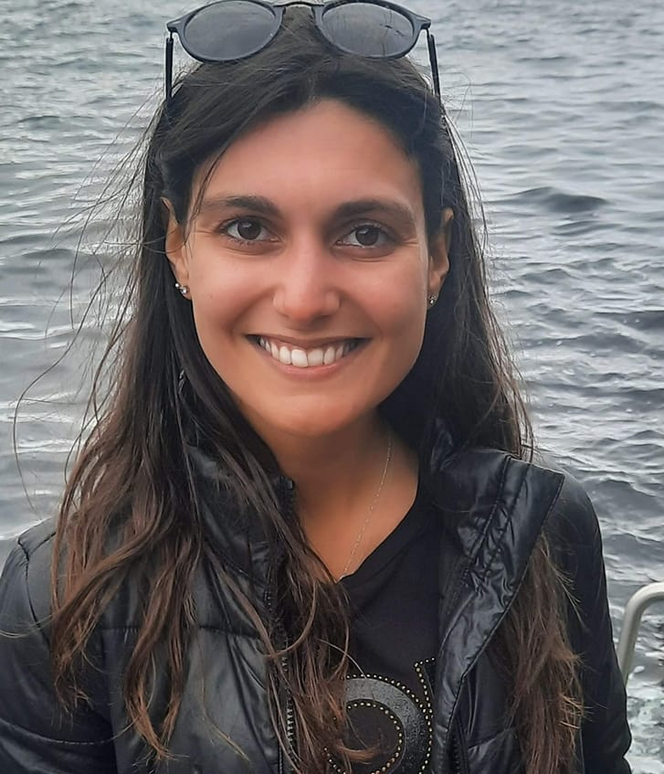
Adriana Ferreira recently joined the AIR Centre as a Project Developer, following the completion of her PhD in Surveying Engineering at the Faculty of Sciences, University of Porto. Her work has primarily focused on ocean applications, with particular expertise in submesoscale processes, such as short-period internal waves. Adriana’s research combines satellite observations, in situ data, oceanographic models, and, more recently, machine learning techniques to advance understanding in this field.
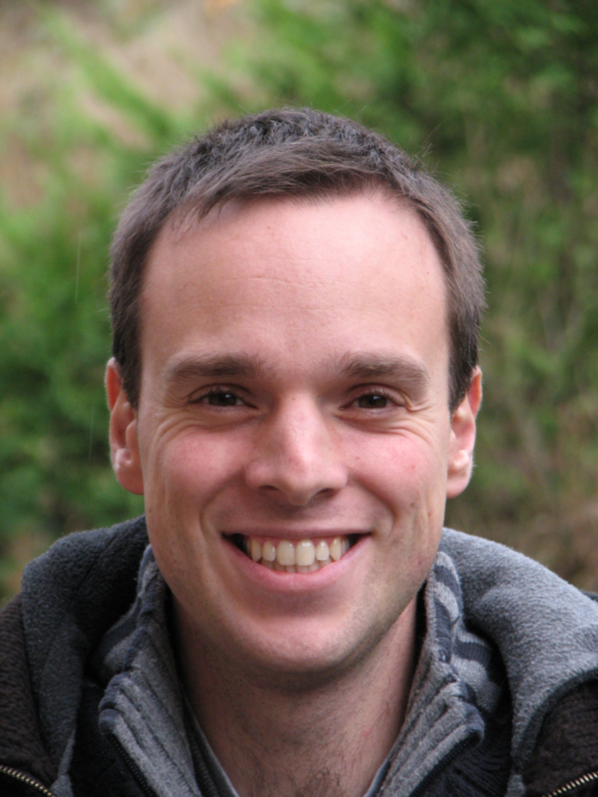
Alexander Barth is an associate professor at the GeoHydrodynamics and Environment Research (GHER) group, of the University of Liège (Belgium). He obtained his PhD in 2004 at the University of Liège on data assimilation in nested ocean models. After his post-doc at the College of Marine Science of the University of South Florida, he worked on variational interpolation with DIVA and DIVAnd and he is principal investigator of several European projects aiming to apply and improve these tools for generating climatologies based on in situ observations. Recently he also investigated the use of machine learning techniques with ocean remote sensing data.
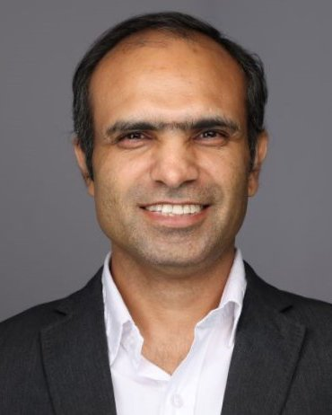
Dr. Ruhela joined the HPC group at TACC in January 2020. Before TACC, he was working in the Network-Based Computing Laboratory at The Ohio State University. He has more than 17 years of R&D experience in HPC, Social Computing, and Telecommunication. He is currently working on novel designs and algorithms in parallel communication to deliver the best performance and scalability for scientific and engineering applications. He has also conducted large scalability studies and performance evaluations of HPC applications on leading supercomputers. Dr. Ruhela received his Ph.D. degree from IIT Delhi and B.Tech degree from NIT Kurukshetra, both in Computer Science. He has worked closely with researchers from The Ohio State University, NICTA Australia (now called Data61), IIT-D, and C-DOT Delhi. He has worked with computational scientists and researchers from TACC, SDSC, OSC, UMH, LLNS, University of Oregon, NCAR, and EPFL on NSF and XSEDE proposals.
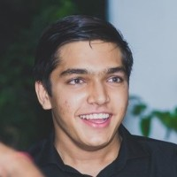
Contributor to the Makie.jl data visualization library and the author of its geospatial extension GeoMakie.jl. Also an author of the GeometryOps.jl package for 2D geographic geometry processing, and contributor to many other packages in the JuliaGeo ecosystem. Interested in geospatial problems and how principles from other fields can be applied to solve them!
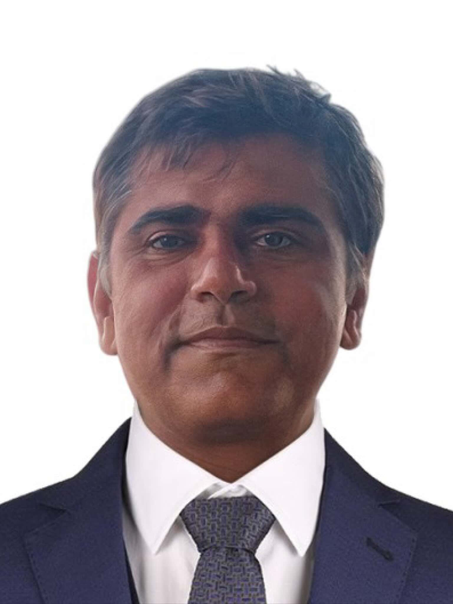
Arun Kumar Shukla is a Data Science Developer at the Atlantic International Research Centre (AIR Centre), working with Julia, scientific machine learning, and SAR-based Earth observation. His research spans hybrid SAR–optical classification, post-fire impact assessment, burn-severity mapping, and the study of forest-fire dynamics across regions such as Mizoram and the Indo-Burma biodiversity hotspot. He also works on machine-learning approaches for environmental monitoring, land-use/land-cover analysis, and Earth-observation data processing. His scientific contributions appear in journals such as Earth and Space Science, Remote Sensing Applications, Environmental Science and Pollution Research, and AGU proceedings.
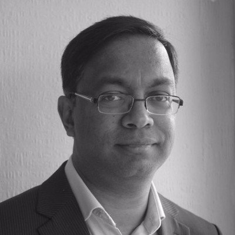
Avik Sengupta is the VP of Engineering at JuliaHub, where he's responsible for building their cloud compute and simulation platform. He is a contributor to Julia and maintainer of several Julia packages, as well as the author of "Julia High Performance", Avik has previously created complex trading systems for the world's leading investment banks.
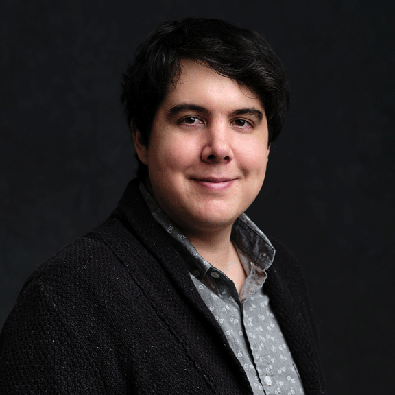
Research Affiliate and Co-PI of the Julia Lab at the Massachusetts Institute of Technology Director of Modeling and Simulation at Julia Computing and Creator / Lead Developer of JuliaSim Director of Scientific Research at Pumas-AI and Creator / Lead Developer of Pumas Lead Developer of the SciML Open Source Software Organization.
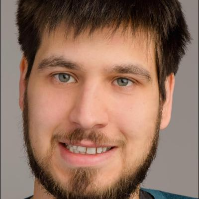
Felix Cremer received his diploma in mathematics from the University
of Leipzig in 2014. In 2016 he started his PhD study on time series
analysis of hypertemporal Sentinel-1 radar data.
He is interested in the use of irregular time series tools on Synthetic
Aperture Radar data to derive more robust information from these data
sets.
He worked on the development of deforestation mapping algorithms and on
flood mapping in the amazon using Sentinel-1 data.
He currently works at the Max-Planck-Institute for Biogeochemistry on
the development of the JuliaDataCubes ecosystem in the scope of the NFDI4Earth
project. The JuliaDataCubes
organisation provides easy to use interfaces for the use of multi
dimensional raster data.
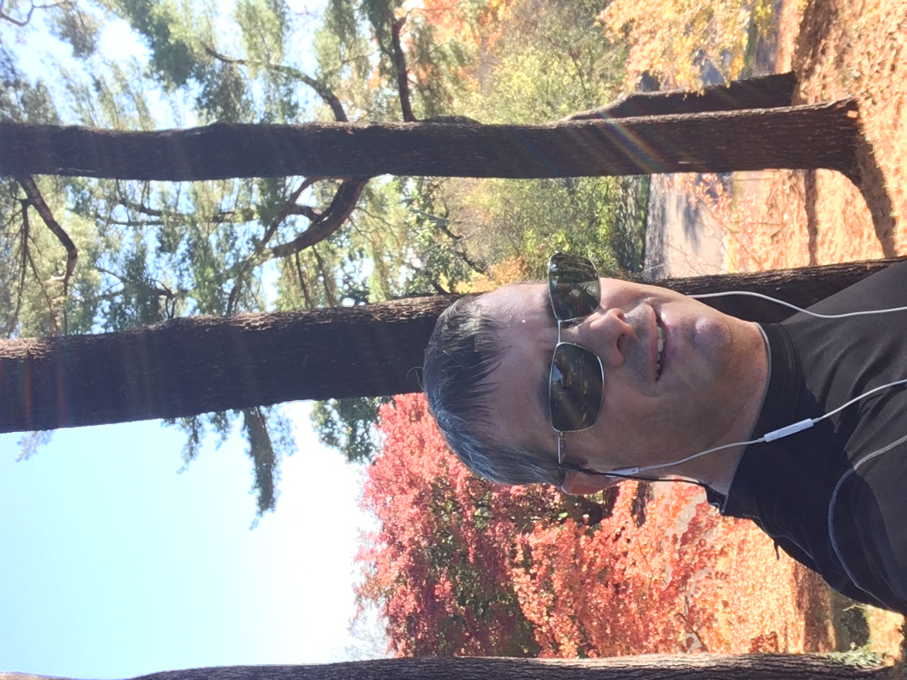
I currently work as a researcher at the Massachusetts Institute of Technology (MIT), and PI/co-PI of projects funded by NASA, NOAA, ARIA, and MIT-Portugal-Program. My research group is focused on ocean sciences and climatology. To this end, we have developed of a series of Julia packages such as MeshArrays.jl (JuliaCon18), ClimateModels.jl and MITgcm.jl (JuliaCon21, JuliaCon23), Drifters.jl and OceanRobots.jl (JuliaCon21, JuliaCon23).
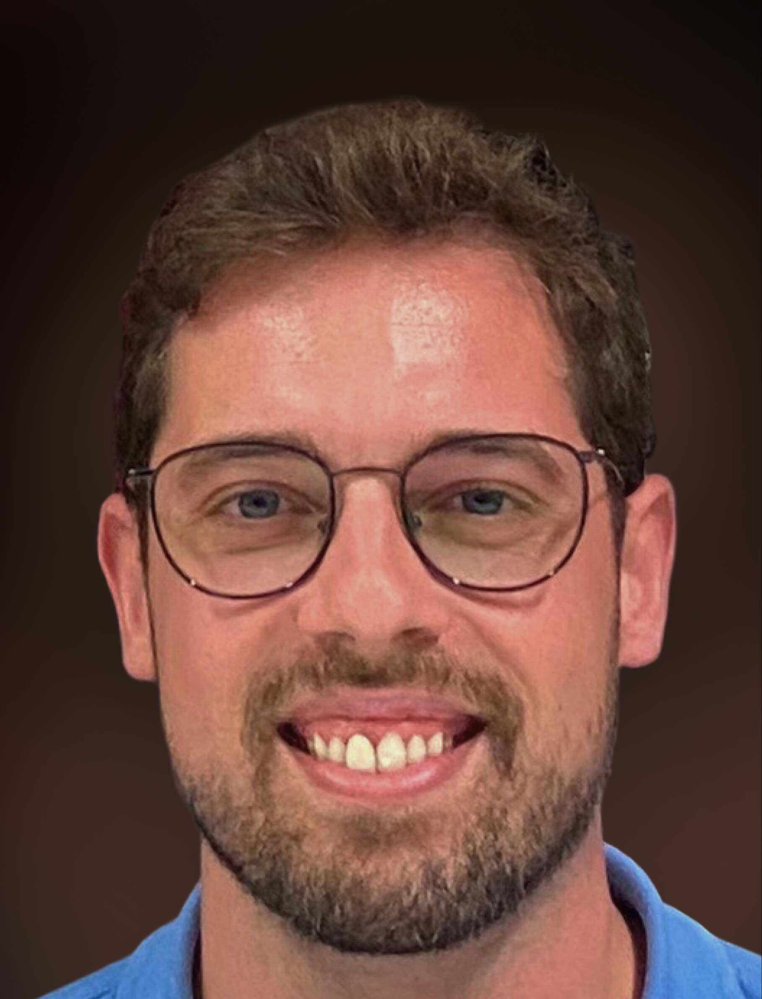
João Gonçalves is a tech enthusiast with over a decade of hands-on experience in software engineering and IT ops. A Linux power user, network tinkerer, and software craftsman, he loves nothing more than diving into complex systems and making them run smoother, faster, and smarter. Currently at AIR Centre, João is immersed in the exciting world of high-performance computing (HPC), where he maintains a cutting-edge HPC datacenter, develops innovative software solutions and contributes to impactful projects.
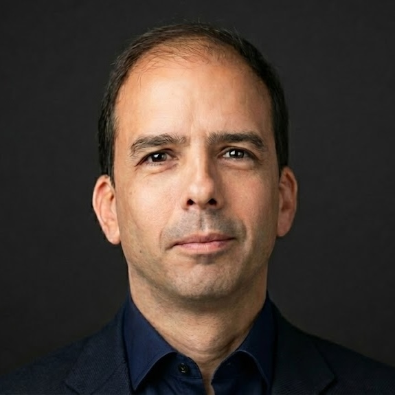
Dr. Joao Pinelo is Head of Data Science, Cloud Infrastructure, and Software Development at the Atlantic International Research Centre. He has been part of the Earth Observation Lab at AIR Centre—an ESA-associated laboratory—since 2020. His work focuses on the design, deployment, and operation of large-scale digital infrastructure for Earth observation, including data centres, sensing networks, and real-time processing platforms. He is the founder and lead organizer of JuliaEO, the International Workshop on Earth Observation with Julia, with editions held annually since 2023. He led the setup of AIR Centre’s data centre, defining and managing end-to-end system architectures for networking, storage, and computation, and establishing it as a hybrid-cloud environment. He has also architected several mission-critical systems, including the Azores IoT network, the Atlantic Cloud, and the Internal Waves Service, and has overseen the development of multiple real-time web applications for EO data access and early-warning services.
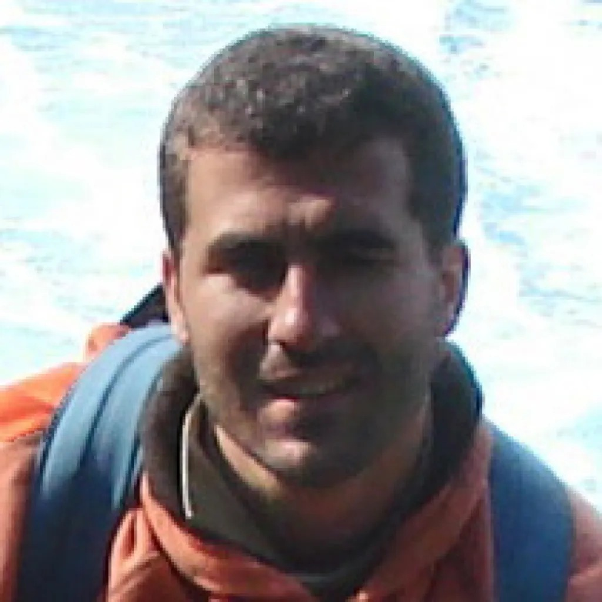
Dr. Jorge Magalhães graduated in Oceanography from the University of Lisbon in 2005 and completed his PhD in internal waves at the University of Porto in 2012. His main research interests include satellite imagery of processes with sea surface signatures, including internal waves, nearshore phenomena such as rip currents, river plumes, and fronts. Recently, his research has focused on software development for SAR and satellite altimetry, numerical ocean modeling (e.g., HYCOM), as well as high-resolution models (e.g., using MITgcm) for accurate representations of internal wave dynamics and their interactions with other physical and biogeochemical processes.
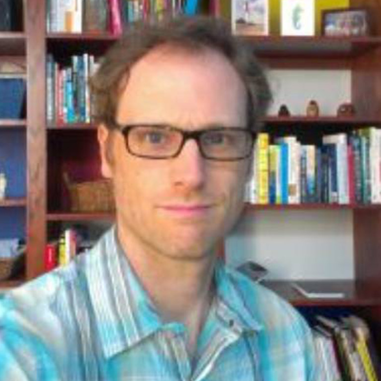
Associate Professor Maarten Buijsman, of The University of Southern Mississippi’s Division of Marine Science, is part of a large team that is funded by the National Oceanographic Partnership Program that studies the characteristics of subsurface waves that have propagated along the density layers across the Pacific Ocean to the U.S. West Coast. These internal waves, generated near Hawaii due to tidal motions over topography, may be relevant for water mass mixing in coastal shelf areas, affecting the coastal circulation and biogeochemistry.
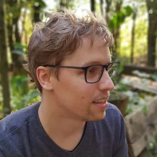
Martijn Visser is a hydrologist at Deltares, where he focuses on integrated water resources management, building Ribasim in Julia on top of SciML and JuMP solvers. A key application of this model is for the national water model of the Netherlands. As an early adopter of the Julia programming language he’s been active in the open source community, helping to set up and maintain JuliaGeo and its packages, which aim to make it easier to work with geospatial data in Julia.
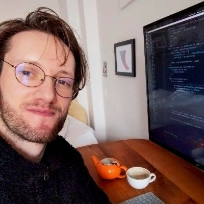
Simon Danisch is a software engineer and open source developer specializing in interactive visualization, GPU computing, and graphics infrastructure. He studied Cognitive Science at the University of Osnabrück, where his work on machine learning and computer vision led him to discover Julia in 2012. He created Makie.jl, Julia's high-performance visualization ecosystem, and Bonito.jl, a reactive web framework for building interactive applications. With over a decade of full-time J ulia development experience, he has contributed extensively to the ecosystem through packages including GPUArrays.jl, FileIO.jl, and PackageCompiler.jl.
The workshop will take place in the Lisbon area, Portugal. The venue is being confirmed and will be announced here.
Invited speakers will be hosted at the event venue.
Arrangements for in-person participants who wish to stay at the same hotel, including preferential rates, will follow once the venue is fixed.
João Pinelo, Chris Rackauckas, Adriana Ferreira.